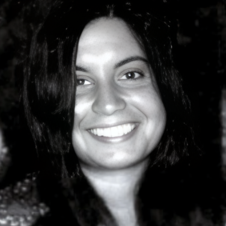
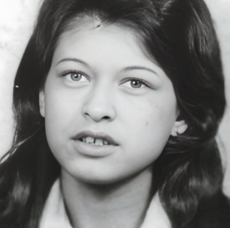
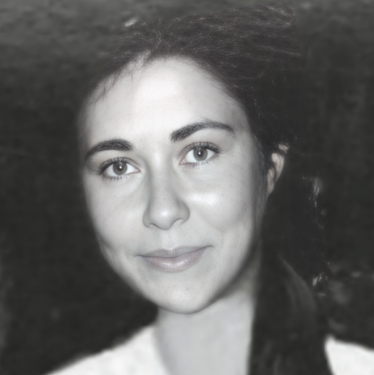

Diana Maidanik
Diana Maidanik tenía 22 años. Era estudiante de Psicología y trabajaba como educadora preescolar. Participaba activamente en actividades comunitarias y en la militancia estudiantil.
Memoria, verdad y justicia.
Diana Maidanik, Silvia Reyes y Laura Raggio fueron asesinadas el 21 de abril de 1974 durante un operativo militar en Montevideo, convirtiéndose en uno de los episodios más representativos de la represión ejercida durante la dictadura uruguaya.
Uruguay durante los primeros años de la dictadura cívico-militar.
El asesinato de las Muchachas de Abril ocurrió durante los primeros meses de la dictadura cívico-militar uruguaya (1973-1985), apenas diez meses después del golpe de Estado del 27 de junio de 1973.
El entonces presidente Juan María Bordaberry profundizó su alianza con sectores conservadores y fortaleció los vínculos con las Fuerzas Armadas, que comenzaron a desempeñar un papel cada vez más decisivo en la conducción política del país.
Este proceso culminó en el denominado Pacto de Boiso Lanza, acuerdo mediante el cual Bordaberry aceptó las exigencias de los altos mandos militares para mantenerse en la presidencia, consolidando así la influencia militar en el gobierno.
En este contexto de persecución política, suspensión de garantías constitucionales y represión sistemática contra opositores, estudiantes, sindicalistas y militantes sociales, las Fuerzas Conjuntas desplegaron una serie de operativos destinados a desarticular los intentos de reorganización de grupos políticos clandestinos.
Fue en ese escenario que se produjo el operativo del 21 de abril de 1974 en el apartamento de la calle Mariano Soler, donde fueron asesinadas Diana Maidanik, Silvia Reyes y Laura Raggio.
Diana Maidanik, Silvia Reyes y Laura Raggio se encontraban en un apartamento ubicado en la calle Mariano Soler, en Montevideo. Durante abril de 1974 las Fuerzas Conjuntas desarrollaban una intensa campaña de persecución contra militantes políticos y personas vinculadas a organizaciones opositoras al régimen.
El apartamento había sido identificado por los organismos represivos como un posible punto de contacto de personas vinculadas a la reorganización clandestina del MLN-T. Como consecuencia, el lugar comenzó a ser vigilado y finalmente fue rodeado durante la madrugada del 21 de abril.
Lo ocurrido en ese apartamento se transformó en uno de los episodios más emblemáticos de la represión estatal durante la dictadura uruguaya.
Golpe de Estado.
Reorganización del MLN-T.
Inicio de detenciones.
Operativo en Mariano Soler.
Reconocimiento oficial del Estado.
Las Muchachas de Abril fueron tres jóvenes militantes asesinadas durante la dictadura cívico-militar uruguaya en abril de 1974.

Diana Maidanik tenía 22 años. Era estudiante de Psicología y trabajaba como educadora preescolar. Participaba activamente en actividades comunitarias y en la militancia estudiantil.

Silvia Reyes tenía 19 años y participaba en actividades estudiantiles y sociales. Al momento de su asesinato se encontraba embarazada de aproximadamente tres meses. Su muerte se convirtió en uno de los símbolos más dolorosos de la violencia ejercida por el terrorismo de Estado en Uruguay.

Laura Raggio tenía 19 años y era estudiante de Psicología. Participaba en actividades de apoyo a militantes perseguidos por la dictadura. Fue asesinada junto a Diana Maidanik y Silvia Reyes durante el operativo militar del 21 de abril de 1974.
Las investigaciones posteriores determinaron que contra el apartamento fueron efectuados más de 140 disparos, una cifra que evidencia la magnitud y desproporción del operativo desplegado aquella madrugada.
Diversas investigaciones judiciales e históricas identificaron a integrantes de las Fuerzas Conjuntas que participaron en la planificación y ejecución del operativo del 21 de abril de 1974.
Oficial del Ejército vinculado a la coordinación de operativos represivos durante la dictadura.
Militar uruguayo posteriormente condenado por múltiples delitos vinculados al terrorismo de Estado.
Integrante de los organismos represivos que participaron en la persecución de militantes políticos durante la época.
Durante décadas, familiares, organizaciones sociales y defensores de los derechos humanos reclamaron verdad y justicia por el asesinato de Diana Maidanik, Silvia Reyes y Laura Raggio. La lucha por el esclarecimiento de los hechos permitió avanzar en investigaciones, procesos judiciales y acciones de reparación.
Familiares y organizaciones de derechos humanos mantuvieron viva la memoria de las Muchachas de Abril, impulsando la investigación de los hechos y denunciando las violaciones cometidas durante la dictadura.
Diversas investigaciones permitieron reconstruir lo ocurrido durante el operativo del 21 de abril de 1974 e identificar responsabilidades dentro del aparato represivo.
En 2023 el Estado uruguayo realizó un acto oficial de reconocimiento de responsabilidad por los asesinatos de Diana Maidanik, Silvia Reyes y Laura Raggio. Este acto representó un importante paso en las políticas de memoria, verdad y reparación impulsadas tras décadas de reclamos de familiares y organizaciones de derechos humanos.
Hoy las Muchachas de Abril son recordadas como símbolo de la lucha por los derechos humanos, la verdad y la justicia. Su historia forma parte de la memoria colectiva del Uruguay y constituye un recordatorio de las consecuencias de la violencia estatal y la importancia de preservar la democracia.
Cada 21 de abril familiares, organizaciones sociales, estudiantes y defensores de los derechos humanos recuerdan a Diana Maidanik, Silvia Reyes y Laura Raggio mediante actividades de homenaje, encuentros educativos y actos conmemorativos.
Su historia continúa siendo estudiada en escuelas, liceos, universidades y espacios de memoria, contribuyendo a la reflexión sobre los derechos humanos, la democracia y las consecuencias del terrorismo de Estado.
Las Muchachas de Abril se han convertido en un símbolo de la lucha por la verdad, la justicia y la preservación de la memoria colectiva en Uruguay.
"La memoria no es permanecer en el pasado. Es construir un futuro donde hechos como estos no vuelvan a repetirse."
En recuerdo de Diana Maidanik, Silvia Reyes y Laura Raggio.